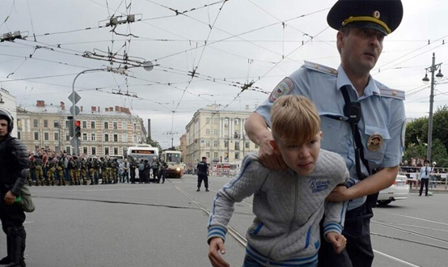

Понятие уголовного наказания
ЦИТАТА
Часть 1 ст. 43 УК РФ устанавливает, что наказание есть мера государственного принуждения, назначаемая по приговору суда.
Оно применяется к лицу, признанному виновным в совершении преступления, и заключается в предусмотренных законом лишении или ограничении прав и свобод этого лица. В этом смысле наказание – это главная форма реализации уголовной ответственности, т.е. обязанности претерпеть страдания и лишения за совершенное преступление.
К признакам наказания относят следующие:
а) уголовное наказание — это наиболее строгая мера государственного принуждения, которая отличается от административно-правовой и гражданско-правовой ответственности;
б) уголовное наказание применяется только судом от имени государства (именем Российской Федерации) путем вынесения обвинительного приговора;
в) основанием применения уголовного наказания является совершение преступления;
г) уголовное наказание подразумевает причинение осужденному определенных лишений или ограничений прав и свобод;
д) уголовное наказание имеет личный, персонифицированный характер, нет ни коллективной, ни долевой ответственности;
е) уголовное наказание – единственный из видов юридического принуждения, который влечет за собой особое правовое последствие — судимость.
Цели наказания
Часть 2 ст. 43 УК определяет цели наказания:
а) восстановление социальной справедливости – восстановление нарушенных преступлением прав и свобод потерпевшего, интересов государства и общества. Оно включает возмещение материального, физического и морального ущерба, а также сам факт наказания преступника за совершение противоправного деяния;
б) исправление осужденного путем воздействия на сознание осужденного, используя при этом меры убеждения и принуждения. Результат, на достижение которого направлены усилия исправительной системы, заключается в том, чтобы убедить и заставить осужденного не нарушать уголовный закон хотя бы под страхом наказания;
в) предупреждение совершения новых преступлений как самим осужденным, так и иными лицами, удержание от совершения преступления под угрозой наказания. Применяя к виновному лицу наказание, суд предупреждает других членов общества от участи, которая их ожидает в случае совершения преступления.
Система уголовных наказаний, закрепленная ст. 44 УК РФ, включает различные по строгости наказания, расположенные в логическом порядке, от менее строгого к более строгому. Этот перечень является исчерпывающим, суд не имеет права применять виды наказаний, не предусмотренные УК РФ.
Система наказаний
Система уголовных наказаний включает следующие виды наказаний:
а) штраф;
б) лишение права занимать определенные должности или заниматься определенной деятельностью;
в) лишение специального, воинского или почетного звания, классного чина и государственных наград;
г) обязательные работы;
д) исправительные работы;
е) ограничение по военной службе;
ж) ограничение свободы;
з) принудительные работы;
и) арест;
к) содержание в дисциплинарной воинской части;
л) лишение свободы на определенный срок;
м) пожизненное лишение свободы;
н) смертная казнь.
Перечисленные виды наказаний подразделяются на три группы в зависимости от порядка их назначения (ст. 45 УК РФ):
1) основные – могут применяться только самостоятельно, их нельзя присоединить к другим видам наказания. К таковым относят: обязательные работы, исправительные работы, ограничение по военной службе, принудительные работы, арест, содержание в дисциплинарной воинской части, лишение свободы на определенный срок, пожизненное лишение свободы, смертная казнь.
Обязательные работы подразумевают выполнение осужденным в свободное от основной работы или учебы время бесплатных общественно полезных работ. Сроки наказания установлены в пределах от 60 до 240 часов, отбываются не свыше четырех часов в день.
Исправительные работы — это работа по месту основной трудовой деятельности осужденного с обязательным удержанием в доход государства из заработка осужденного в пределах от пяти до двадцати процентов. Сроки наказания определены в пределах от двух месяцев до двух лет.
Ограничение по военной службе применяется только к осужденным военнослужащим, проходящим службу по контракту и состоит в удержании из денежного содержания осужденного в доход государства в размере, установленном приговором суда, но не выше 20%, а также в исключении возможности повышения в должности и воинском звании. Сроки наказания определены законом в пределах от трех месяцев до двух лет.
Принудительные работы применяются как альтернатива лишению свободы за совершение преступления небольшой или средней тяжести либо за совершение тяжкого преступления впервые. Они состоят в привлечении осужденного к труду в местах, определяемых учреждениями и органами уголовно-исполнительной системы. Срок принудительных работ, по общему правилу, – от двух месяцев до пяти лет.
Арест состоит в содержании осужденного в условиях строгой изоляции от общества в специальных исправительных учреждениях (арестных домах). Сроки ареста устанавливаются в пределах от одного до шести месяцев.
Содержание в дисциплинарной воинской части назначается военнослужащим, проходящим военную службу по призыву, а также по контракту на должностях рядового и сержантского состава, если они на момент вынесения судом приговора не отслужили установленного законом срока службы по призыву. Сроки этого вида наказания определены законом в пределах от трех месяцев до двух лет.
Лишение свободы на определенный срок — наиболее часто применяемый вид наказания, оно состоит в изоляции осужденного от общества путем направления его в колонию-поселение или помещения в исправительную колонию общего, строгого или особого режима либо в тюрьму на определенный срок – от шести месяцев до двадцати лет. При назначении наказания по совокупности преступлений срок лишения свободы может быть назначен до двадцати пяти лет, а по совокупности приговоров — до тридцати лет.
Пожизненное лишение свободы назначается только как альтернатива смертной казни за совершение особо тяжких преступлений, посягающих на жизнь.
Смертная казнь признается исключительной мерой наказания и может быть назначена только за особо тяжкие преступления, посягающие на жизнь. На данный момент данный вид наказания не применяется в уголовной практике и заменяется пожизненным лишением свободы;
2) дополнительные – не могут быть назначены самостоятельно, назначаются только дополнительно к основным. К таковым относят лишение специального, воинского или почетного звания, классного чина и государственных наград.
Лишение специального, воинского или почетного звания, классного чина и государственных наград может быть назначено за совершение тяжкого или особо тяжкого преступления. При этом суд обязан учесть личность виновного;
3) смешанные – могут назначаться как в качестве основных, так и в качестве дополнительных. К таковым относят штраф, лишение права занимать определенные должности или заниматься определенной деятельностью и ограничение свободы.
Штраф – это денежное взыскание, назначаемое в пределах, предусмотренных УК РФ. Размер штрафа определяется судом с учетом тяжести совершенного преступления и имущественного положения осужденного. В виде дополнительного наказания штраф может назначаться только в случаях, предусмотренных соответствующими статьями Особенной части УК.
Лишение права занимать определенные должности или заниматься определенной деятельностью по своему содержанию и в роли основного и дополнительного видов наказания является запрещением занимать должности на государственной службе, в органах местного самоуправления либо заниматься определенной профессиональной или иной деятельностью. Сроки установлены дифференцированно в зависимости от роли, в которой используют это наказание: от одного года до пяти лет в качестве основного вида и на срок от шести месяцев до трех лет в качестве дополнительного вида наказания.
Ограничение свободы заключается в содержании осужденного в специальном учреждении без изоляции от общества в условиях осуществления за ним контроля. Сроки наказания дифференцированы в зависимости от характера совершенного преступления и личности виновного: лицам, осужденным за совершение умышленных преступлений и не имеющим судимости, — на срок от одного года до трех лет; лицам, осужденным за неосторожное преступление, — на срок от одного года до пяти лет.